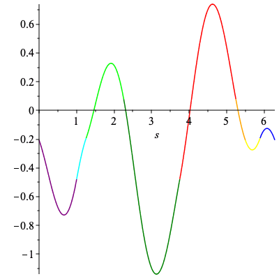
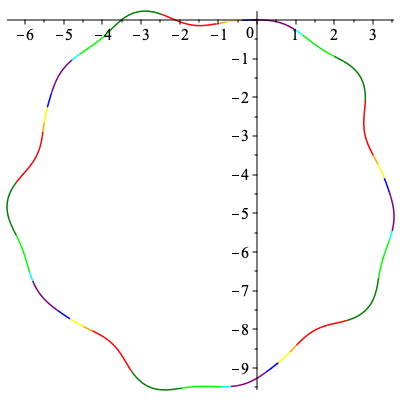

Non-congruent non-degenerate curves with identical signatures
Link to paper
Non-congruent non-degenerate curves with identical signatures.
Maple Code
- C infinity Curve (.html) (.mw)
- Curves with different orders of smoothness (.html) (.mw)
- Non-degenerate Cogwheels (.html) (.mw)
 